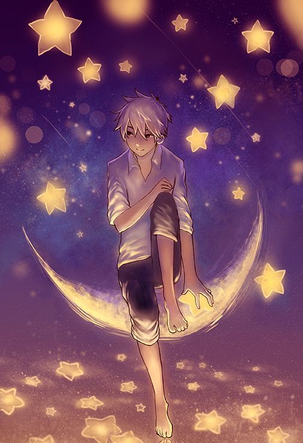
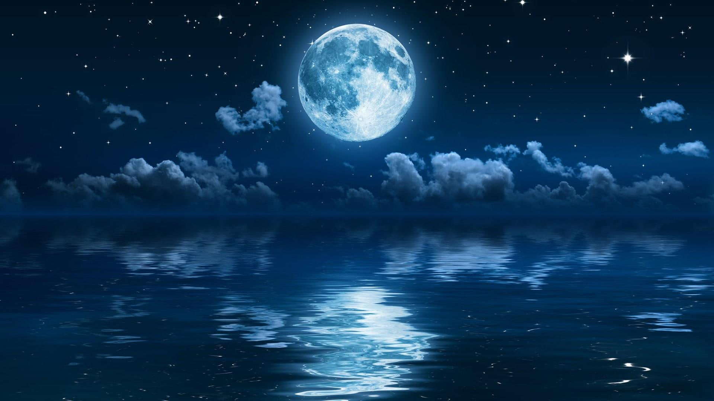

Te amo 10Mil Millones! ^^
Te amo como se aman ciertas cosas oscuras:
No te amo como si fueras rosa de sal, topacio
o flecha de claveles que propagan el fuego:
te amo como se aman ciertas cosas oscuras,
secretamente, entre la sombra y el alma.
Te amo como la planta que no florece y lleva
dentro de sí, escondida, la luz de aquellas flores,
y gracias a tu amor vive oscuro en mi cuerpo
el apretado aroma que ascendió de la tierra.
Te amo sin saber cómo, ni cuándo, ni de dónde,
te amo directamente sin problemas ni orgullo:
así te amo porque no sé amar de otra manera,
sino así de este modo en que no soy ni eres,
tan cerca que tu mano sobre mi pecho es mía,
tan cerca que se cierran tus ojos con mi sueño.
El Chico de la Noche y su Estrella:
Bajo el manto nocturno, el chico soñador, Persigue en el firmamento, su estrella, su esplendor. En la oscuridad, busca su paz y su calma, Anhelando estar a su lado, sentir su alma.
Sus manos no alcanzan la estrella que brilla, Pero en su corazón, la esperanza se aviva, Desea estar cerca, en su eterno resplandor, Ser el testigo fiel de su danza y su amor.
La noche le susurra secretos de pasión, Mientras él camina, con firme determinación, Entre suspiros cósmicos, el deseo se hace eco, De unir su ser con la estrella, su sueño más reco.
En cada destello celeste, se vislumbra su anhelo, De sentirse completo, en un abrazo eterno. El chico de la noche sigue su camino, Siguiendo el destello, sin miedo ni destino.
Con cada paso, su corazón late más fuerte, Imaginando un encuentro, donde el tiempo se pierde. Sabe que la distancia no define su amor, Pues en la noche, su conexión se hace mayor.
En su mirada brillan estrellas y deseo, El chico de la noche, en su universo propio. Quizás sus manos no alcancen la estrella brillante, Pero su amor trasciende, sin límites, constante.
En la oscuridad, el chico espera paciente, Sabedor de que el destino será complaciente. Un día, su estrella y él se unirán en el cielo, Y juntos escribirán un amor eterno.
Así sigue su camino, el chico de la noche, Con fe en su corazón, en cada paso derroche, Porque sabe que el amor es luz en la oscuridad, Y su estrella le espera, en un abrazo de eternidad.
En la melodía de nuestro amor:
En el silencio de la noche estrellada, donde el amor se vuelve melodía, mis versos se entrelazan en una danza, expresando el fuego que en mi pecho arde.
Tus ojos son luceros que iluminan, mi sendero en la oscuridad más honda, en ellos encuentro el brillo infinito, que enciende la pasión que en mí se esconde.
Tu risa es un suspiro de alegría, que llena mis días de dulce encanto, y en cada beso encuentro la poesía, que hace vibrar mi ser, en cada canto.
Eres el verso más hermoso y puro, la melodía que mi alma anhela, en ti encuentro el amor más seguro, y en tus brazos, el refugio que anhela.
Juntos navegamos en el mar eterno, donde los sueños toman forma y vuelo, y en cada verso que mi pluma escribe, plasmo el amor que por ti siento, cielo.
Que nuestra historia sea eterna y bella, como el poema más dulce y profundo, unidos por un amor que destella, y en cada latido, amor fecundo.

Destellos de Amor: La Magia entre Dos Almas
En el horizonte de nuestro amor se despliega, una danza mágica que el universo entrega. Yo, cautivado por la luna y su serenidad, tú, una estrella brillante llena de vitalidad.
Como amante de la noche, encuentro en ti mi guía, en tus destellos encuentro paz y alegría. Eres una estrella resplandeciente en el cielo, iluminas mi camino, llenando mi ser de anhelo.
Tú, estrella radiante, desbordas amor y pasión, tu fulgor en mi vida deja una huella y canción. En cada amanecer, tu brillo enciende mi ser, y juntos, en un abrazo cósmico, volvemos a renacer.
Juntos exploramos los misterios de la eternidad, donde la noche y las estrellas encuentran su verdad. Eres mi luna encantadora, mi guía en la oscuridad, juntos, en armonía, construimos nuestra realidad.
Que nuestra unión sea como destellos en el cielo, donde el amor y la pasión se entrelazan con anhelo. En esta travesía celeste, compartimos sueños y risas, entrelazando nuestras almas, escribiendo nuestras premisas.
Eres mi estrella más brillante en el firmamento, y a tu lado, encuentro amor y alimento. En cada latido, juntos brillamos con esplendor, dos almas unidas en un amor de infinito resplandor.
